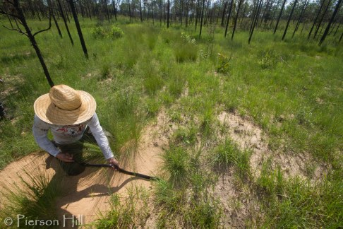
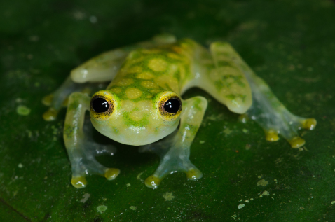
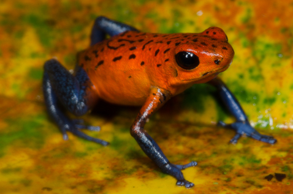
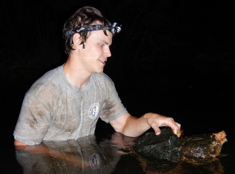
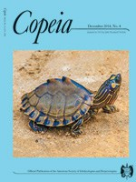
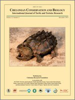

Publications
Below are my publications and PDF reprints, and here is a link to my Google Scholar. Peer-reviewed publications are listed numerically and ordered by year. Carets (^) indicate undergraduate students that I mentored.
Submitted/in review

T Mitchell, B Folt, J Hall (in review). Agama the Grouch: dumpsters are important habitat for invasive African rock agama lizards in Florida.
B Folt, C Guyer (in review). Habitat-dependent effects of predators on prey frogs in a Neotropical wet forest.
Accepted/in press
[20] B Folt, J Goessling, AM Tucker, C Guyer, S Hermann, E Shelton-Nix, CP McGowan. Contrasting patterns of demography and population viability among gopher tortoise populations in Alabama. Journal of Wildlife Management, in press.
[19] AJ Lawson, B Folt, AM Tucker, F Erickson, CP McGowan. Decision context as a necessary component of population viability analysis appraisal. Conservation Biology, in press.
2020
[18] B Folt (2020). Population demography of Rhinoclemmys funerea (Black River Turtle) at a protected forest reserve in Costa Rica. Herpetological Conservation and Biology 15(3):611–619. PDF DOI
[17] R Etzel^, M Cornish^, MS Kifer^, L Nuñez, G Valladao^, B Folt (2020). Subterranean advertisement and duet calling behavior in Ptychohyla legleri (Legler’s Stream Frog). Alytes 37(3–4): 57–61. PDF Data

[16] B Folt, CP McGowan, DA Steen, S Piccolomini, M Hoffman, J Godwin, C Guyer (2020). Modeling strategies and evaluating success during repatriations of elusive and endangered species. Animal Conservation 23: 273–285. PDF DOI Code
2019
[15] C Guyer, B Folt, M Hoffman, J Bauder, D Stevenson, S Goetz, M Miller, J Godwin (2019). Patterns of head shape and scutellation in Drymarchon couperi (Squamata: Colubridae) reveal a single morphological species. Zootaxa 4695(2): 168–174. PDF DOI
[14] C Guyer, S Goetz, B Folt, K Joyce^ & M Hayes (2019). Variation in head shape and color of slimy salamanders (Plethodon glutinosus complex) across the Gulf Coastal Plain, USA. Copeia 107(4): 694–700. PDF DOI

[13] B Folt, J Bauder, S Spear, D Stevenson, M Hoffman, J Oaks, PL Wood Jr, C Jenkins, D Steen, C Guyer (2019). Taxonomic and conservation implications of population genetic admixture, mito-nuclear discordance, and male-biased dispersal of a large endangered snake, Drymarchon couperi. PLoS ONE 14(3): e0214439. PDF DOI Data Op-ed in the Tallahassee Democrat
[12] R Hopkins^, B Folt (2019). Screaming calls of Leptodactylus savagei (Smoky Jungle Frog) function as an alarm for conspecifics. Journal of Herpetology 53(2): 154–157. PDF DOI Data 
2018
[11] N Rivera^, B Folt (2018). Community assembly of glass frogs (Centrolenidae) in a Neotropical wet forest: a test of the river zonation hypothesis. Journal of Tropical Ecology 34: 108–120. PDF DOI
 [10] B Folt, MA Donnelly, C Guyer (2018). Spatial patterns of Oophaga pumilio in a homogeneous plantation system are consistent with conspecific attraction. Ecology and Evolution 8: 2880–2889. PDF DOI
2017
 [9] B Folt, W Lapinski (2017). New observations of frog and lizard predation by wandering and orb-weaver spiders in Costa Rica. Phyllomedusa 16: 269–277. PDF DOI
[9] B Folt, W Lapinski (2017). New observations of frog and lizard predation by wandering and orb-weaver spiders in Costa Rica. Phyllomedusa 16: 269–277. PDF DOI
[8] JR Roberts, KM Halanych, CR Arias, B Folt, JM Goessling, SA Bullard (2017). Emendation and new species of Hapalorhynchus Stunkard, 1922 (Digenea: Schistosomatoidea) from musk turtles (Kinosternidae: Sternotherus) in Alabama and Florida rivers. Parasitology International 66: 748–760. PDF DOI

2016
[7] B Folt, JB Jensen, A Teare, D Rostal (2016). Establishing reference demography for conservation: A case study of Macrochelys temminckii in Spring Creek, Georgia. Herpetological Monographs 30: 21–33. PDF DOI
[6] B Folt, N Garrison, C Guyer, J Rodriguez, JE Bond (2016). Phylogeography and evolution of the Red Salamander (Pseudotriton ruber). Molecular Phylogenetics and Evolution 98: 97–110. PDF DOI 
[5] JR Ennen, J Godwin, JE Lovich, BR Kreiser, B Folt, S Hazzard (2016). Interdrainage morphological and genetic differences in the Escambia Map Turtle, Graptemys ernsti. Herpetological Conservation and Biology 11(1): 122–131. PDF/DOI
2015
[4] B Folt, C Guyer (2015). Evaluating recent taxonomic changes for alligator snapping turtles (Testudines: Chelydridae). Zootaxa 3947(3): 447–450. PDF DOI 
2014
[3] JC Godwin, JE Lovich, JR Ennen, B Kreiser, B Folt, C Lechowicz (2014). Hybridization of two megacephalic map turtles (Testudines: Emydidae: Graptemys) in the Choctawhatchee River drainage of Alabama and Florida. Copeia 2014(4): 725–742. PDF DOI
2013
 [2] B Folt, JC Godwin (2013). Status of the Alligator Snapping Turtle (Macrochelys temminckii) in south Alabama with comments on its distribution. Chelonian Conservation and Biology 12(2): 211–217. PDF DOI
[1] B Folt, KE Reider (2013). Leaf-litter herpetofaunal richness, abundance, and community assembly in mono-dominant plantations and primary forest of northeastern Costa Rica. Biodiversity and Conservation 22(9): 2057–2070. PDF DOI
Book chapters
B Folt (in press). Eastern Fence Lizard Sceloporus undulatus (Bosc & Daudin 1801). In: D Wynn et al. (eds). Reptiles of Ohio. Forthcoming.

B Folt, JG Davis (2013). Blanchard’s Cricket Frog Acris blanchardi (Harper 1947). In: R Pfingsten, JG Davis, TO Matson, G Lipps Jr., D Wynn, BJ Armitage (eds) Amphibians of Ohio. Ohio Biological Survey Bulletin New Series 17(1)
Natural history papers
C Sanspree, CM Murray, B Folt (2016). Macrochelys temminckii (Alligator Snapping Turtle): predation. Herpetological Review 47(1): 124–5. PDF
B Folt, D Laurencio, JM Goessling, RD Birkhead, J Stiles, S Stiles, S Belford, AT Harris (2015). One hundred two new county records for amphibians and reptiles in Alabama. Herpetological Review 46(4): 591–594. PDF
C Ganong, B Folt (2015). Pristimantis cerasinus (Clay-colored Rain Frog): mortality. Herpetological Review 46(3): 416.
TW Pierson^, T Stratmann, EC White, AG Clause, C Carter, MW Herr, AJ Jenkins, H Vogel, M Knoerr, B Folt (2014). New county records of amphibians and reptiles resulting from a bioblitz competition in north-central Georgia, USA. Herpetological Review 45(2): 296–297. PDF
SC Sterrett, JB Jensen, B Folt (2014). Graptemys barbouri (Barbour’s Map Turtle): basking height. Herpetological Review 45(2): 314–31
B Folt, T Pierson^, SM Goetz, J Goessling, D Laurencio, D Thompson^, SP Graham (2013). Amphibians and reptiles of Jasper County, Mississippi with comments on the potentially extinct Bay Springs Salamander (Plethodon ainsworthi). Herpetological Review 44(2): 283–286. PDF
B Folt, D Laurencio (2013). Agkistrodon contortrix (Copperhead): diet. Herpetological Review 44(3): 517.
B Folt, JR Folt, CR Brune (2012). New county records for Ohio amphibians and reptiles. Herpetological Review 43(4): 624–625.
Geographic distribution notes
R Birkhead, B Folt, C Guyer (2017). Nerodia rhombifer (Diamond-backed Watersnake): geographic distribution. Herpetological Review 48(4).
R Birkhead, B Folt, C Guyer (2017). Acris crepitans (Eastern Cricket Frog): geographic distribution. Herpetological Review 48(4)
J Roberts, B Folt, JB Jensen (2016). Pseudemys concinna (River Cooter): geographic distribution. Herpetological Review 47(4): 626.
B Folt (2013). Hemidactylium scutatum (Four-toed Salamander): geographic distribution. Herpetological Review 44(2): 269.
IEP Turner, B Folt (2012). Terrapene carolina (Eastern Box Turtle): geographic distribution. Herpetological Review 43(4): 617.
B Folt (2012). Lithobates heckscheri (River Frog): geographic distribution. Herpetological Review 43(1): 99.
B Folt (2012). Sternotherus odoratus (Eastern Musk Turtle): geographic distribution. Herpetological Review 43(1): 100.
B Folt (2012). Plestiodon laticeps (Broad-headed Skink): geographic distribution. Herpetological Review 43(1): 103.
B Folt (2012). Virginia valeriae (Smooth Earthsnake): geographic distribution. Herpetological Review 43(1): 109.
Outreach publications
B Folt (2019). Op-ed: “Indigo Snake Releases are Guided by Strong Science and Conservation Ethic.” The Tallahassee Democrat. Link
B Folt (2014). Alligator Snapping Turtles: Ecology and Mythology in Alabama. Alabama Wildlife Magazine, July 2014. 44 pp. Article featured with cover photograph.